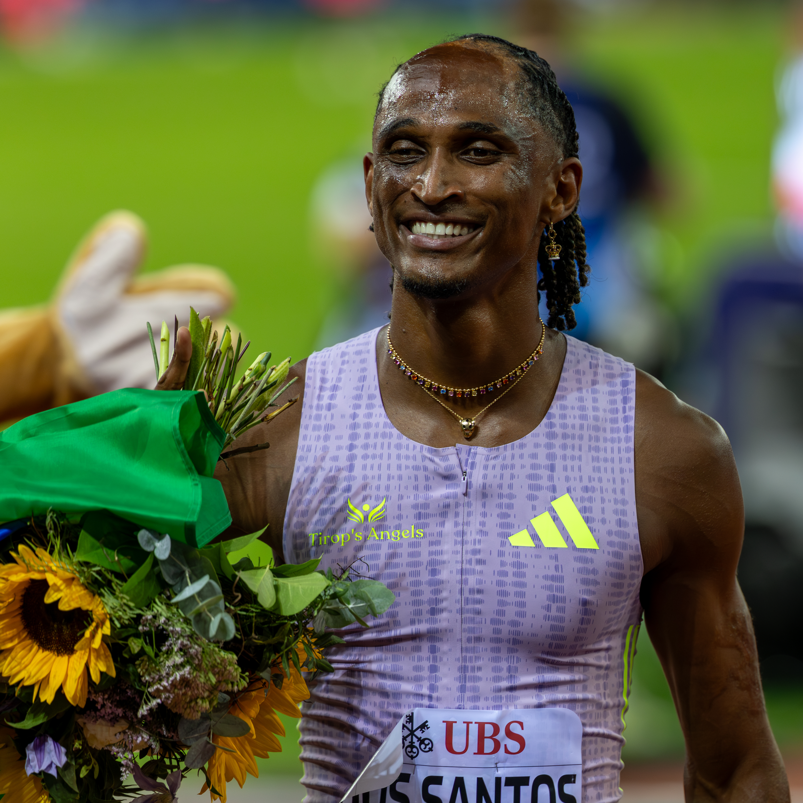

A Final da Diamond League 2026 encerrou a temporada do principal circuito anual de atletismo com duas noites de alto nível no King Baudouin Stadium, em Bruxelas, na Bélgica. Realizada em 4 e 5 de setembro, dentro da 50ª edição do tradicional Allianz Memorial Van Damme, a decisão distribuiu os 32 Troféus de Diamante da temporada, 16 no masculino e 16 no feminino.
O principal destaque brasileiro foi Alison dos Santos. Uma semana depois de correr os 400 metros com barreiras em Zurique e quebrar o recorde mundial da prova, o brasileiro voltou a dominar a distância. Em Bruxelas, venceu com 46s70, estabeleceu o novo recorde do meeting e conquistou seu terceiro título geral da Diamond League. Matheus Lima completou a presença brasileira no pódio com o terceiro lugar.
Mas a final de 2026 foi muito além de uma única prova. Chase Jackson e Busang Collen Kebinatshipi quebraram recordes da própria Diamond League na primeira noite, Emmanuel Wanyonyi voltou a confirmar seu domínio nos 800 metros, Julien Alfred levou os 200 metros, Masai Russell ganhou os 100 metros com barreiras e atletas como Kenneth Bednarek, Marileidy Paulino, Audrey Werro e Faith Cherotich também deixaram Bruxelas como campeões da temporada.
Como funciona a Final
A Diamond League não funciona como um campeonato convencional de pontos corridos no qual o líder da classificação ao fim da temporada automaticamente fica com o título. Os pontos conquistados ao longo do circuito servem principalmente para definir quem chega à grande final.
Nas etapas classificatórias, os oito primeiros colocados de cada prova recebem de oito a um ponto. Ao fim da chamada Road to the Final, classificam-se normalmente os seis primeiros dos concursos de campo, os oito melhores nas provas entre 100 e 800 metros e os dez melhores nas provas de 1.500 metros e distâncias mais longas. Há ainda possibilidade de wildcard dentro das regras do circuito.
Depois disso, a lógica muda completamente: na final, vale o resultado daquele dia. Quem vence a prova é campeão da Diamond League e recebe o Troféu de Diamante. Por isso, um atleta pode dominar a classificação durante meses e ainda assim perder o título na última competição.
Em 2026, a premiação total destinada à final em Bruxelas foi de US$ 2,24 milhões, dentro de uma temporada na qual a organização anunciou US$ 9,24 milhões em prêmios no circuito.
Alison dos Santos confirma temporada histórica
Para o Brasil, o momento central da final aconteceu nos 400 metros com barreiras.
Píu chegou a Bruxelas carregando uma marca que mudou seu status na história da prova. No dia 27 de agosto, em Zurique, havia completado os 400 metros com barreiras em 45s80, superando em 0s14 o antigo recorde mundial de 45s94 estabelecido por Karsten Warholm nos Jogos Olímpicos de Tóquio.
Em Bruxelas, não precisou chegar tão perto daquele tempo para dominar novamente. Alison marcou 46s70, enquanto o norte-americano Trevor Bassitt terminou em segundo com 48s03. Matheus Lima foi terceiro com 48s18.
A vitória ainda derrubou uma marca histórica do Memorial Van Damme: o antigo recorde da competição era de 47s51, obtido por André Phillips 40 anos antes. Alison terminou 1s33 à frente do segundo colocado e conquistou pela terceira vez o título geral da Diamond League.
Veja a prova do título abaixo:
A conquista em Bruxelas também funciona como ponto culminante de uma temporada construída ao longo de diferentes etapas. O brasileiro passou por importantes confrontos no circuito europeu, entre eles a participação na Diamond League de Estocolmo, antes de chegar ao trecho decisivo do calendário em condição de protagonista mundial.
A presença de Matheus Lima no terceiro lugar ampliou o peso do resultado para o atletismo brasileiro. A decisão terminou, portanto, com dois brasileiros entre os três melhores dos 400 metros com barreiras masculinos.
Os resultados de Alison na Diamond League 2026
Considerando todas as participações em meetings da Diamond League em 2026, o brasileiro disputou sete provas e venceu todas elas. A temporada incluiu uma corrida de 300 metros com barreiras e seis de 400 metros com barreiras, incluindo a grande final em Bruxelas.
- Shanghai/Keqiao, China — 16 de maio
Prova: 300 metros com barreiras
Resultado: 1º lugar
Tempo: 33s01 - Xiamen, China — 23 de maio
Prova: 400 metros com barreiras
Resultado: 1º lugar
Tempo: 46s72 - Estocolmo, Suécia — 7 de junho
Prova: 400 metros com barreiras
Resultado: 1º lugar
Tempo: 47s11 - Oslo, Noruega — 10 de junho
Prova: 400 metros com barreiras
Resultado: 1º lugar
Tempo: 46s89 - Chorzów, Polônia — 23 de agosto
Prova: 400 metros com barreiras
Resultado: 1º lugar - Zurique, Suíça — 27 de agosto
Prova: 400 metros com barreiras
Resultado: 1º lugar
Tempo: 45s80 - Bruxelas, Bélgica — 5 de setembro — Final da Diamond League
Prova: 400 metros com barreiras
Resultado: 1º lugar
Tempo: 46s70
A sequência mostra o tamanho do domínio de Alison no circuito em 2026: ele venceu todas as provas da Diamond League que disputou, passou por Warholm em confrontos diretos ao longo da temporada, quebrou o recorde mundial em Zurique e fechou a campanha conquistando o Troféu de Diamante em Bruxelas.
O peso do tricampeonato
O terceiro Troféu de Diamante coloca Chorzów, Polônia em um grupo seleto da história do circuito. Desde a criação da Diamond League, em 2010, 59 atletas conseguiram conquistar pelo menos três títulos em uma mesma disciplina. Alison entrou definitivamente nessa lista ao vencer os 400 metros com barreiras pela terceira vez, repetindo as conquistas de 2022 e 2024. Entre todos os atletas que já passaram pela competição, apenas 34 encerraram a temporada de 2026 com exatamente três Troféus de Diamante na carreira, enquanto nomes históricos conseguiram ampliar suas coleções para quatro, cinco, seis ou sete títulos.
Os recordistas absolutos continuam Renaud Lavillenie, no salto com vara, e Christian Taylor, no salto triplo, com sete Troféus de Diamante cada.
Kebinatshipi e Chase Jackson quebram recordes
A primeira noite da decisão produziu duas das maiores marcas de Bruxelas.
No arremesso do peso feminino, Chase Jackson alcançou 21,14 metros. Além de conquistar seu terceiro Troféu de Diamante, a norte-americana estabeleceu um novo recorde da Diamond League e ampliou seu próprio recorde continental.
Pouco depois, Busang Collen Kebinatshipi protagonizou uma das corridas mais rápidas da história dos 400 metros. O atleta de Botsuana venceu em 43s40, também novo recorde da Diamond League. Jereem Richards, de Trinidad e Tobago, foi segundo com 43s68, enquanto Jacory Patterson terminou em terceiro com 43s78. A marca de Kebinatshipi o colocou empatado na quinta posição da lista histórica da distância naquele momento.
Nos 800 metros, Emmanuel Wanyonyi manteve sua sequência de títulos. O queniano venceu em 1min41s80 e chegou ao quarto Troféu de Diamante consecutivo. Djamel Sedjati terminou em segundo e Yanis Meziane foi terceiro com recorde pessoal de 1min42s87.
Outro nome de destaque foi Emmanouil Karalis. O grego ganhou o salto com vara com 6,12 metros e estabeleceu recorde do meeting. Armand Duplantis, que seria seu principal adversário, desistiu após o aquecimento por causa de um incômodo na perna. Karalis aproveitou a oportunidade e conquistou seu primeiro título da Diamond League.
Julien Alfred e Oblique Seville vencem nos sprints
As provas de velocidade também produziram campeões de peso.
Oblique Seville venceu os 100 metros masculinos em 9s90. Emmanuel Eseme foi segundo com 9s93, e Kayinsola Ajayi completou o pódio com 9s97.
Nos 200 metros femininos, Julien Alfred marcou 21s79 e conquistou seu terceiro título seguido da Diamond League, mas o primeiro na distância. A atleta de Santa Lúcia foi a única competidora da final a completar a prova abaixo dos 22 segundos.
Já na segunda noite, Kenneth Bednarek ganhou os 200 metros masculinos com 19s62, igualando sua melhor marca mundial da temporada registrada poucos dias antes em Zurique. Tina Clayton conquistou os 100 metros femininos em 10s93, sendo a única atleta da prova a correr abaixo dos 11 segundos.
Audrey Werro vence duelo eletrizante nos 800 metros
Uma das chegadas mais apertadas da final aconteceu nos 800 metros femininos.
Audrey Werro venceu em 1min54s75, apenas seis centésimos à frente de Femke Broeders-Bol, que marcou 1min54s81. Além do título, a suíça quebrou o recorde do Memorial Van Damme que pertencia à queniana Pamela Jelimo desde 2008.
O resultado consolidou Werro como campeã da Diamond League em uma temporada na qual os 800 metros femininos se destacaram pela profundidade e pelo alto nível das principais competidoras.
Russell confirma força nas barreiras
Masai Russell também chegou a Bruxelas poucos dias depois de um recorde mundial.
Em Zurique, a norte-americana havia completado os 100 metros com barreiras em 12s09. Na final, não repetiu aquela marca, mas voltou a vencer: 12s20, novo recorde do meeting.
Devynne Charlton foi segunda com 12s33, marca que também estabeleceu novo recorde das Bahamas, enquanto Megan Simmonds terminou em terceiro com 12s43.
Outras grandes marcas da final
A decisão ainda produziu resultados expressivos em diferentes áreas do atletismo.
Klaudia Kazimierska venceu os 1.500 metros femininos em 3min54s04, estabelecendo recorde polonês, recorde do meeting e melhor marca mundial da temporada.
Nos 5.000 metros masculinos, Birhanu Balew venceu com 12min45s70. O tempo foi recorde asiático e também melhor marca mundial do ano. Egide Ntakarutimana terminou em segundo com recorde nacional do Burundi.
No arremesso do peso masculino, Rajindra Campbell decidiu a prova na sexta e última tentativa, alcançando 23,08 metros, melhor marca mundial da temporada.
Marileidy Paulino, por sua vez, conquistou seu quarto título da Diamond League nos 400 metros ao vencer em 48s64.
Todos os campeões da Diamond League 2026
Masculino:
- 100 metros — Oblique Seville
- 200 metros — Kenneth Bednarek
- 400 metros — Busang Collen Kebinatshipi
- 800 metros — Emmanuel Wanyonyi
- 1.500 metros — Cameron Myers
- 5.000 metros — Birhanu Balew
- 110 metros com barreiras — Ja’Kobe Tharp
- 400 metros com barreiras — Alison dos Santos
- 3.000 metros com obstáculos — Gemechu Godana
- Salto em altura — Mateusz Kołodziejski
- Salto com vara — Emmanouil Karalis
- Salto em distância — Tajay Gayle
- Salto triplo — Andy Díaz Hernández
- Arremesso do peso — Rajindra Campbell
- Lançamento do disco — Kristjan Čeh
- Lançamento do dardo — Rumesh Tharanga Pathirage
Feminino:
- 100 metros — Tina Clayton
- 200 metros — Julien Alfred
- 400 metros — Marileidy Paulino
- 800 metros — Audrey Werro
- 1.500 metros — Klaudia Kazimierska
- 5.000 metros — Freweyni Hailu
- 100 metros com barreiras — Masai Russell
- 400 metros com barreiras — Anna Cockrell
- 3.000 metros com obstáculos — Faith Cherotich
- Salto em altura — Eleanor Patterson
- Salto com vara — Hana Moll
- Salto em distância — Monae’ Nichols
- Salto triplo — Saly Sarr
- Arremesso do peso — Chase Jackson
- Lançamento do disco — Feng Bin
- Lançamento do dardo — Yan Ziyi
Países com atletas campeões na Diamond League 2026
- Estados Unidos — 7 títulos
- Jamaica — 4 títulos
- Quênia — 2 títulos
- Austrália — 2 títulos
- Etiópia — 2 títulos
- Polônia — 2 títulos
- China — 2 títulos
- Botsuana — 1 título
- Bahrein — 1 título
- Brasil — 1 título
- Grécia — 1 título
- Itália — 1 título
- Eslovênia — 1 título
- Sri Lanka — 1 título
- Santa Lúcia — 1 título
- República Dominicana — 1 título
- Suíça — 1 título
- Senegal — 1 título
Alison ainda terá o Ultimate Championship pela frente
A temporada internacional de pista ainda reserva um último grande capítulo. Entre 11 e 13 de setembro, Budapeste, na Hungria, recebe a primeira edição do World Athletics Ultimate Championship, competição criada para reunir campeões olímpicos, campeões mundiais, vencedores da Diamond League e alguns dos atletas de melhor desempenho da temporada. O torneio terá 28 provas distribuídas em três noites e será disputado no National Athletics Centre.
Alison dos Santos está confirmado nos 400 metros com barreiras e chega ao evento como um dos principais nomes da prova após conquistar a Diamond League e estabelecer o recorde mundial. Em Budapeste, o brasileiro terá novamente entre os principais adversários Karsten Warholm e Rai Benjamin, em mais um encontro entre três dos maiores especialistas da história recente da distância.
Diamond League 2026 entra para a história
A edição de Bruxelas reuniu vários elementos que tornam a final deste uma referência para a temporada: campeões de diferentes gerações, recordes da Diamond League, marcas mundiais do ano, recordes nacionais e a consolidação de atletas que chegaram ao fim do circuito em seu melhor momento.
Para o Brasil, porém, a imagem definitiva é a dos 400 metros com barreiras. Píu transformou uma temporada que já tinha um recorde mundial em mais um título da Diamond League, enquanto Matheus Lima colocou um segundo brasileiro no pódio da mesma prova.
A final também mostrou exatamente por que a Diamond League possui uma dinâmica própria. Meses de viagens, confrontos e pontos servem para selecionar os melhores, mas o troféu é decidido em uma única oportunidade. Em Bruxelas, 32 provas produziram 32 campeões — e a edição de 2026 terminou com Alison dos Santos entre os principais nomes de um dos encontros mais fortes do atletismo mundial atual.